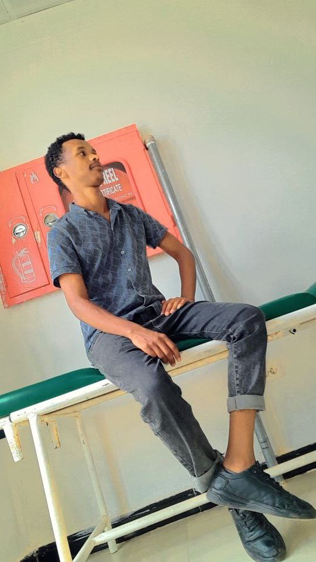

I'm murad abaynew i was born in 03/05/1993 EC
my place of birth is north wello
I heard from my mother, Mrs. Belet Ebabu, from my father, Mr. Abayinu semagn.
I joined this world in 1993. Then we made a living in Muhni,
Tigray region
. After 2 years, we moved to Wolo.
i started my education in2002 EC
I do different things. I started working outside of the family
when I was 13 years old.
It happened because of my desire to work,
so I didn't have any problems. 2012$2013 For me,
of course, things were difficult
, but the strength of my family helped me. After all,
it was difficult as a country then. Alhamdulillah,
I am studying in the southern region.
I am studying Computer Science at Jinka University in Jinka City
